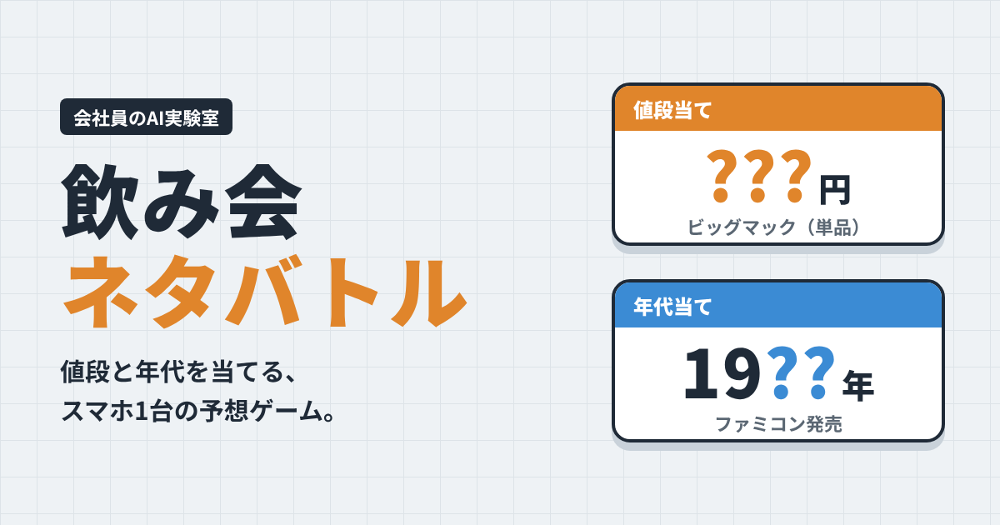
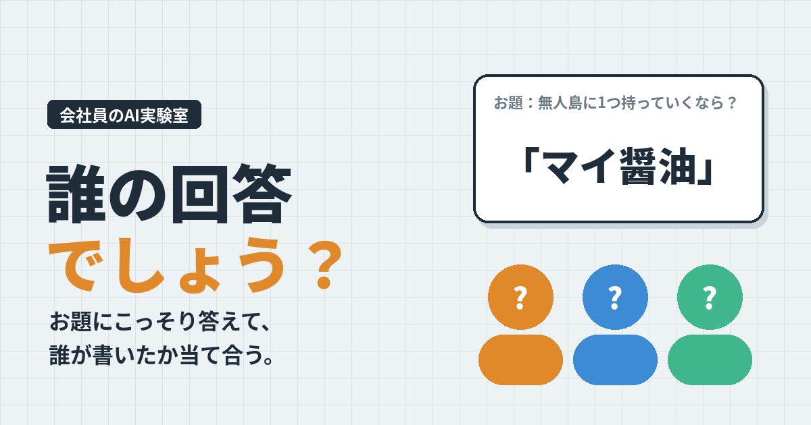
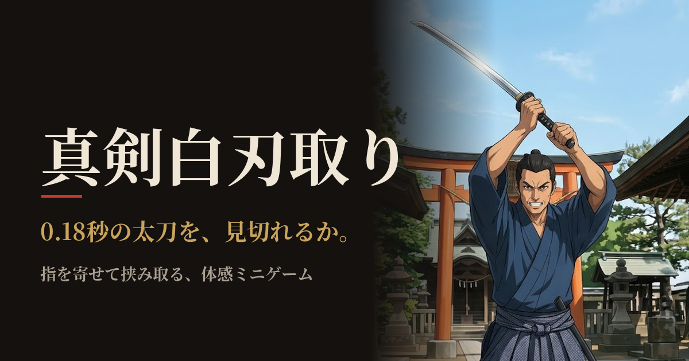
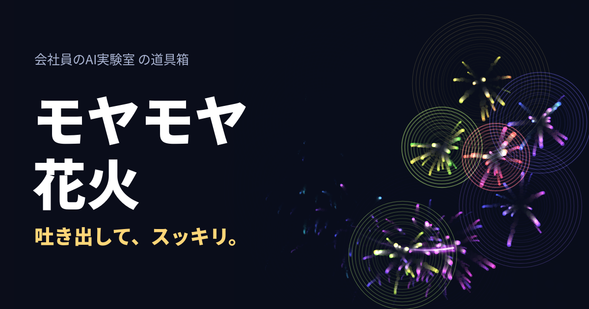
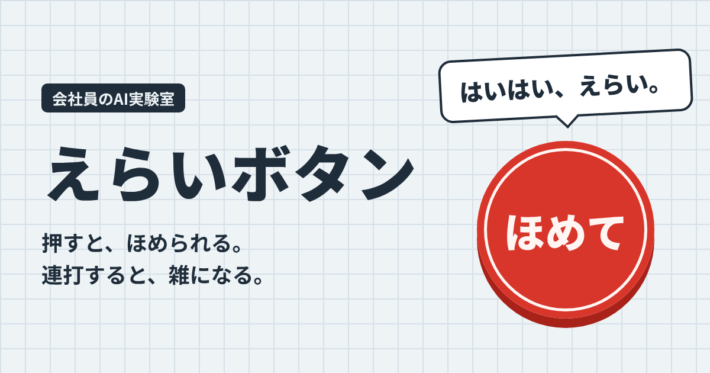
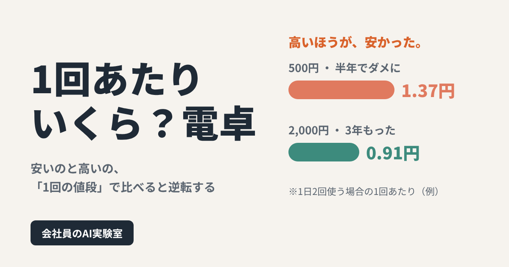
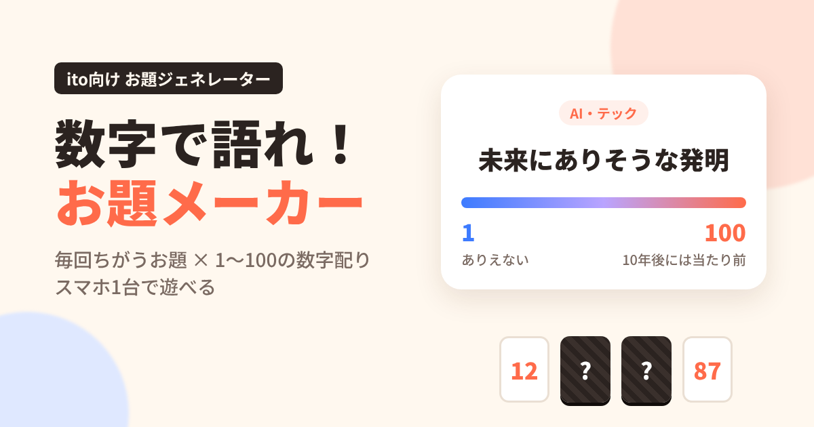
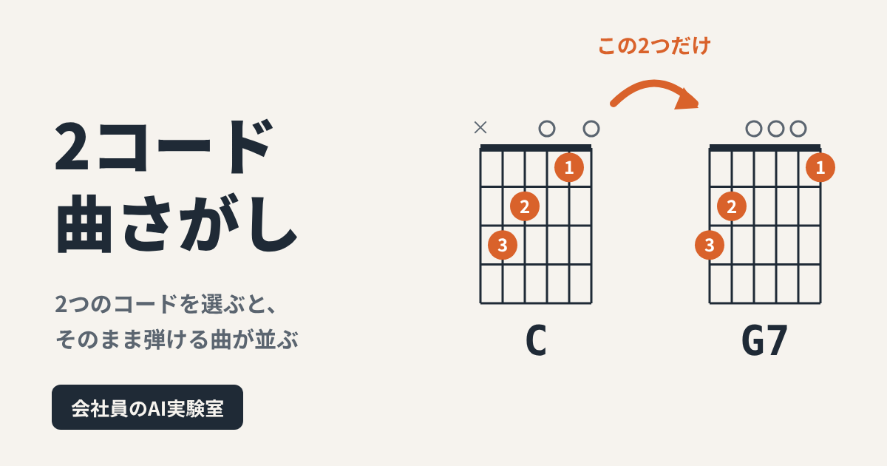
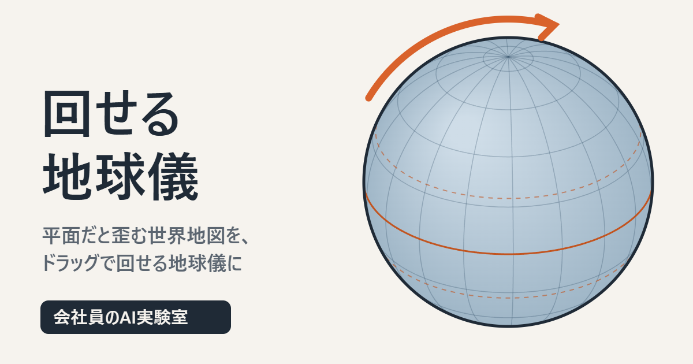

道具箱
会社員が週末、"あったらいいな"をAIと作ってみた道具を置いています。役に立つものも、立たないものもあります。インストール不要で、ブラウザで開くだけで使えます。

百合の間に挟まるな！
おじゃま虫を、ぶっ飛ばせ。桜の下のベンチで寄り添うふたりの間に、おじゃま虫が割り込もうとやってきます。タップでぶっ飛ばして、30秒守りきるゲームです。結末はあなたの守り方しだい。
開く ▶
飲み会ネタバトル
ハンバーガーやはがきなど身近なものの「今の値段」と、ファミコン発売みたいな出来事の「年」を当てるゲーム。スマホ1台を順番に回して全員が予想を入れ、正解に近い順に点数が入ります。点数で競うだけなので、負けても飲まなくて大丈夫です。
開く ▶
誰の回答でしょう？
飲み会の話のネタに。お題に全員がこっそり答えて、誰が書いたかを当て合うゲームです。スマホ1台を順番に回して入力するだけで、推理は指差しでアナログに。すぐ遊べる基本編と、駆け引きのある応用編があります。
開く ▶
真剣白刃取り
0.18秒の太刀を、見切れるか。振り下ろされる刀を、左右の親指を寄せて挟み取る体感ミニゲーム。最後の一太刀は人間の反応速度より速いので、見てからでは間に合いません。相手の動きを読めるかが勝負です。スマホの縦画面専用です。
開く ▶English ver.
モヤモヤ花火
吐き出して、スッキリ。イライラ・モヤモヤしたときに、画面をこすったり連打したりするだけのアプリ。こすると光の帯と火花、連打するとコンボで音が上がっていきます。ゲージが満タンになったら、最後は深呼吸でひと息。
開く ▶


数字で語れ！お題メーカー
カードゲーム「ito」で遊ぶときのお題ジェネレーター（非公式）。オリジナルのお題と「場面×ものさし」の組み合わせで毎回ちがうお題が出ます。1〜100の数字配りと答え合わせも、スマホ1台でできます。
開く ▶
2コード曲さがし
ギターを教える人のための道具。コードを2つタップすると、その2つだけで弾ける曲が指の移動が少ない順に並びます。インストール不要・ブラウザで開くだけで、レッスン中にスマホからすぐ使えます。
開く ▶
© 2026 会社員のAI実験室